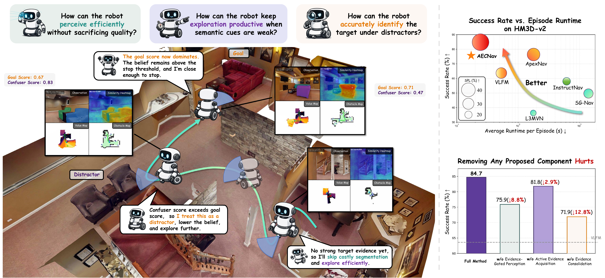
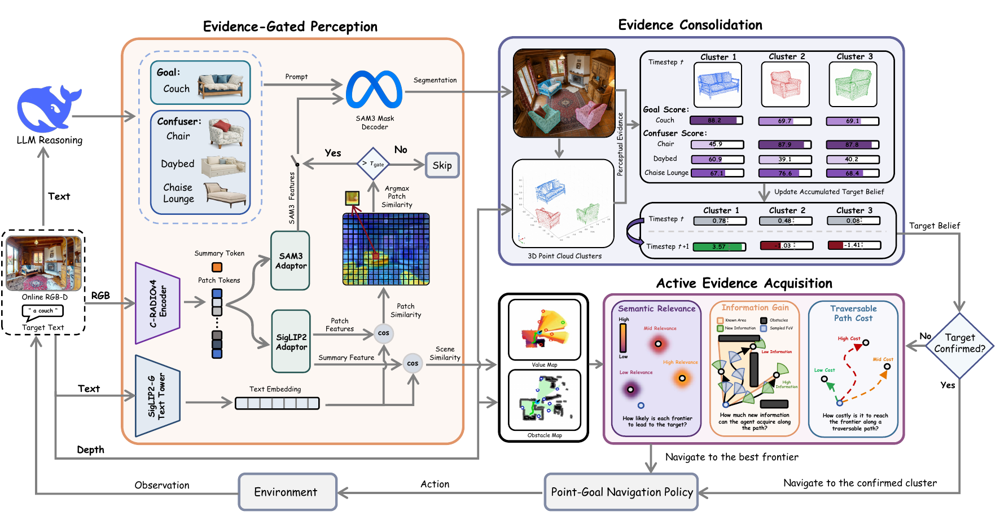
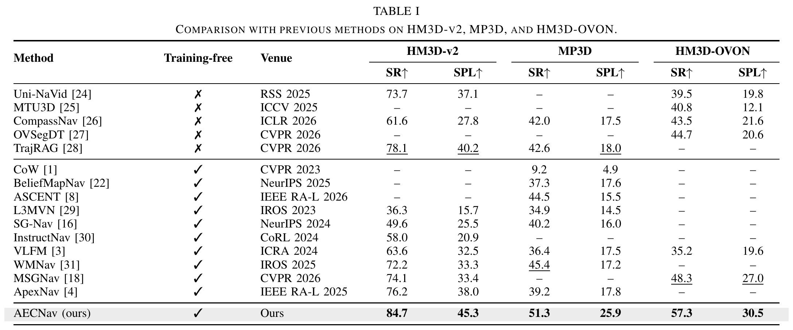
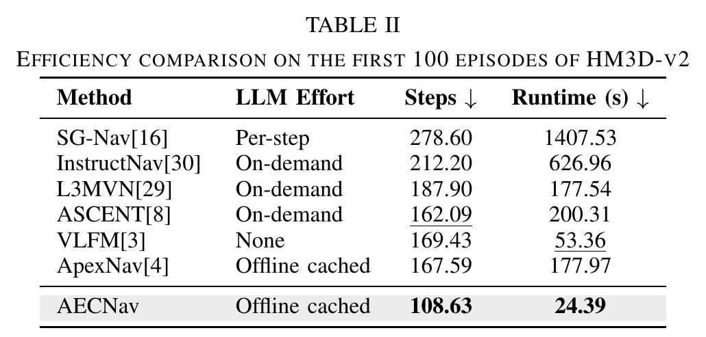
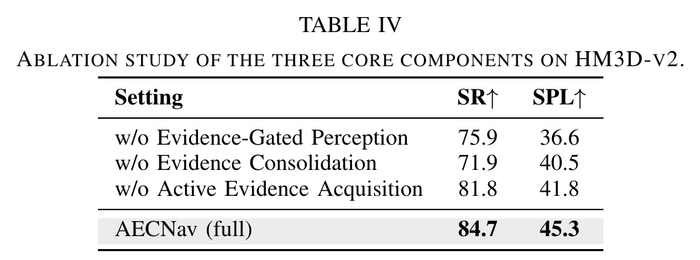
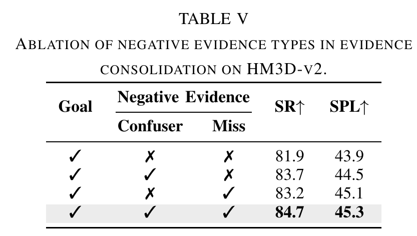
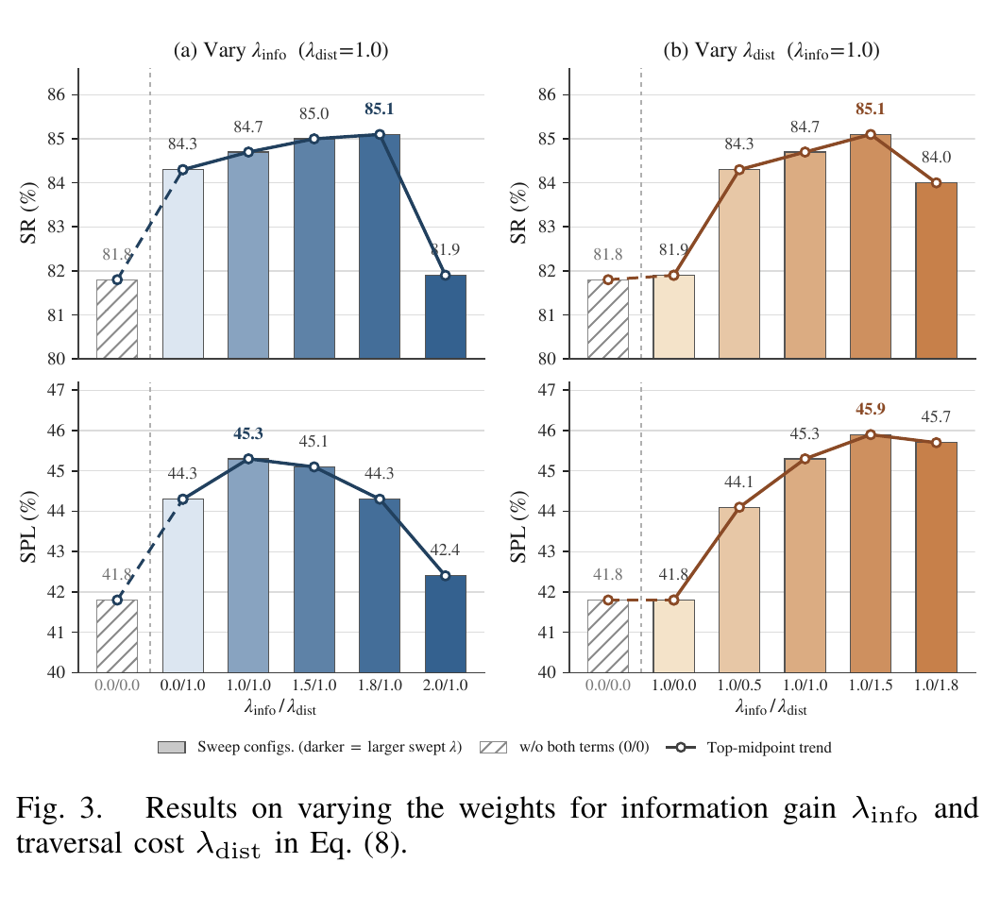
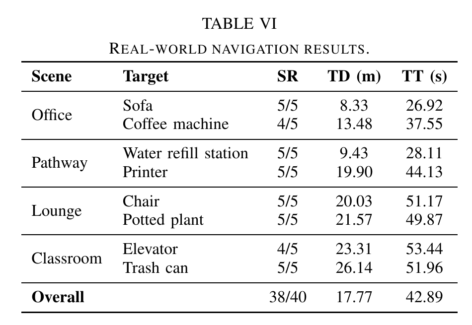
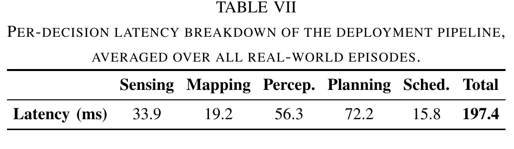

1School of Artificial Intelligence (SAI), The Chinese University of Hong Kong, Shenzhen 2Artificial Intelligence Thrust (AI Thrust), Information Hub, The Hong Kong University of Science and Technology (Guangzhou)
Zero-shot object-goal navigation (ZSON) requires a mobile robot to locate an arbitrarily specified object in a previously unseen environment without task-specific training. AECNav reframes ZSON as an evidence-driven perception-to-decision problem and integrates unified semantic perception, explicit spatial evidence accumulation, and active exploration in a training-free pipeline. Through evidence-gated perception, cluster-level evidence consolidation, and active evidence acquisition, AECNav reduces redundant visual processing, distinguishes genuine targets from visually similar distractors, and directs the robot toward informative viewpoints at low traversal cost.

Component 01
Evidence-Gated Perception
Extracts scene- and patch-level cues in a single C-RADIOv4 forward pass, aligns them with a cached SigLIP2 goal embedding, and projects scene relevance onto a persistent value map. SAM3 segmentation is triggered only when patch-level evidence exceeds a similarity gate, reusing shared features and otherwise skipping the expensive decoder.
Component 02
Evidence Consolidation
Back-projects detected instances into 3D clusters and maintains a target belief for each cluster through additive log-odds updates. Goal evidence raises the belief, while confuser evidence and missed expected detections lower it; stopping requires stable belief and spatial proximity.
Component 03
Active Evidence Acquisition
When no cluster is reliable enough for commitment, scores reachable frontiers using normalized semantic relevance, expected information gain, and traversal cost. Information gain is estimated from unknown space visible along the shortest feasible path, guiding the robot toward viewpoints that efficiently reduce uncertainty.
Real-World Demonstrations
We deploy AECNav on a Unitree Go2 quadruped robot equipped with an Intel RealSense D455. The demonstrations cover eight open-vocabulary targets across four indoor scenes, including challenging visually similar distractors and targets beyond standard benchmark vocabularies.
More Demonstrations
SceneHallwayGoalPrinter
SceneHallwayGoalWater Refill Station
SceneOfficeGoalCoffee Machine
SceneOfficeGoalSofa
SceneClassroomGoalElevator
SceneLoungeGoalPotted Plant
Method Overview
AECNav is a structured pipeline that integrates unified and efficient semantic perception, explicit spatial evidence accumulation, and active exploration for evidence-driven zero-shot ObjectNav. It consists of three tightly coupled components: evidence-gated perception derives all semantic cues from a shared encoding and invokes segmentation only when local evidence justifies it; evidence consolidation accumulates detections into a running cluster-level belief that distinguishes positive, confuser, and miss evidence; and active evidence acquisition guides exploration toward regions expected to provide the greatest new information at the lowest traversal cost.

Main Results
Comparison on Navigation Accuracy
AECNav achieves the highest SR and SPL across all three benchmarks without task-specific training: 84.7% SR and 45.3% SPL on HM3D-v2, 51.3% SR and 25.9% SPL on MP3D, and 57.3% SR and 30.5% SPL on HM3D-OVON.

Comparison on Efficiency
On the first 100 HM3D-v2 episodes, AECNav averages 108.63 steps and 24.39 seconds per episode—2.2× faster than VLFM while using 33% fewer steps than the second-best ASCENT. The gain comes from information-aware exploration together with shared encoding and evidence-gated perception.

Ablation Studies
Ablation of Main Components
Removing evidence-gated perception reduces SR by 8.8 points and SPL by 8.7 points; removing evidence consolidation produces the largest SR loss, with 12.8 SR points and 4.8 SPL points; and removing active evidence acquisition lowers SR by 2.9 points and SPL by 3.5 points. These results confirm that all three components contribute to navigation accuracy and efficiency.

Ablation of Evidence Consolidation
Log-odds accumulation already recovers most of the benefit, while adding confuser and miss evidence yields a further 2.8-point SR gain. The two terms repair distinct failures by suppressing visually similar distractors and withdrawing stale belief when a candidate stops reappearing.

Ablation of Exploration Weights
The traversal-cost term lifts SR from 81.8% to 84.3% and SPL from 41.8% to 44.3%; adding information gain raises SR as high as 85.1%. Information gain alone offers almost no benefit, so AECNav uses balanced default weights of λinfo=1.0 and λdist=1.0 across datasets.

Real-World Deployment
Real-World Navigation Results
Across 40 trials covering four indoor scenes and eight open-vocabulary targets, AECNav succeeds in 38 episodes with a 95% success rate and achieves full success on six targets. The evaluation spans traveled distances from 8.33 m in the office to 26.14 m in the classroom.

Latency Analysis
The complete deployment pipeline averages 197.4 ms per decision, sustaining a decision rate of roughly 5 Hz on the real-world robot. Planning is the largest measured stage at 72.2 ms, followed by perception at 56.3 ms.

Citation
If you find this work useful, please cite:
@misc{liu2026aecnavactiveevidenceconsolidation,
title = {AECNav: Active Evidence Consolidation for Efficient Zero-Shot Open-Vocabulary Object Navigation},
author = {Guanlin Liu and Shaobin Ling and Renyuan Liu and Zeying Gong and Junjie Hu},
year = {2026},
eprint = {2608.10817},
archivePrefix = {arXiv},
primaryClass = {cs.RO},
url = {https://arxiv.org/abs/2608.10817}
}